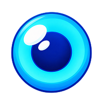

Eye paying-cluster animation
New supplied split artwork. One continuous blue eyeball: smooth shading, soft reflection and iris perspective move together. No moving inner almond edge. Gold frame and gems stay locked. Approval preview only—no runtime asset replacement.
Loading components…
Close-up · rotating eye
Center → left hold → right hold → upward glance → center. Blue highlights and shadows follow the gaze; no frame shaking.Paying cluster · actual cell scale
Eight matching eyes. Paying glow stays behind each cell; frame/gems remain stationary. Other symbols stay idle.1 · Rolling blue backplate
2 · Moving iris3 · Gold rim + fixed gems